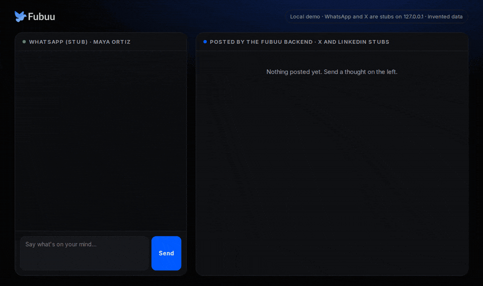
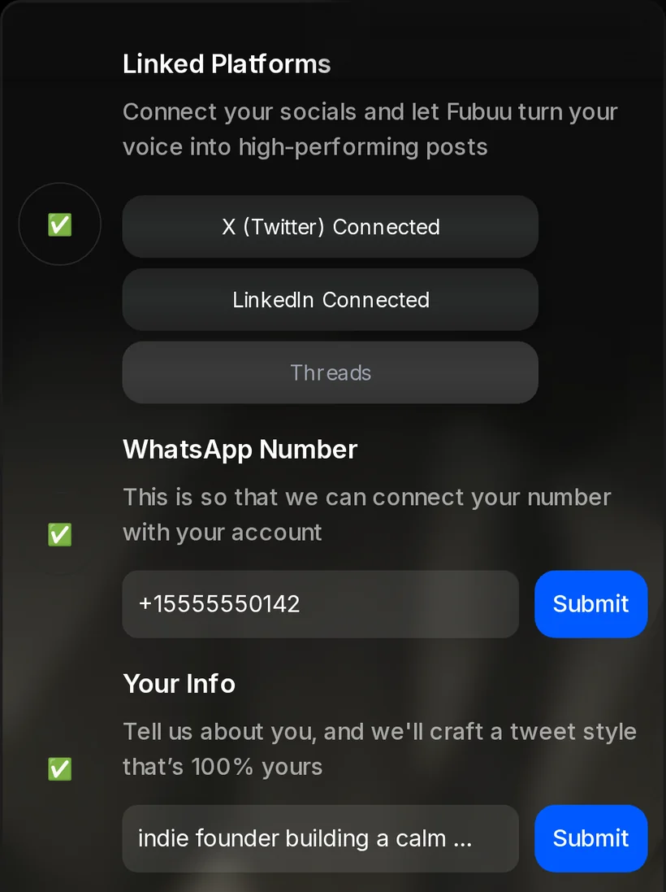
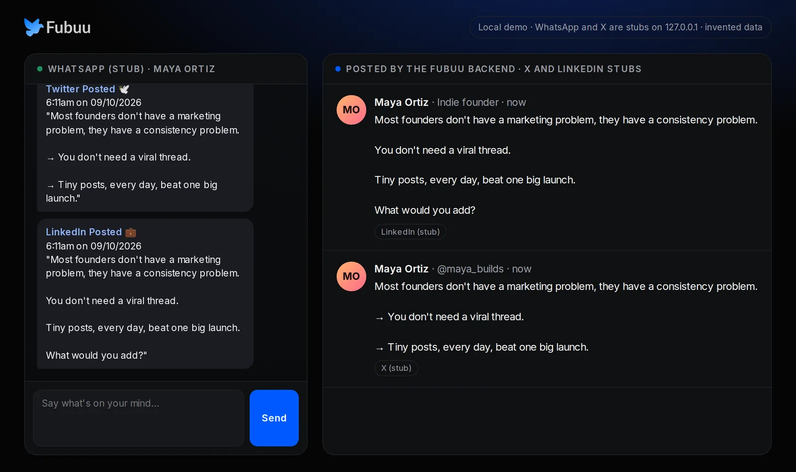
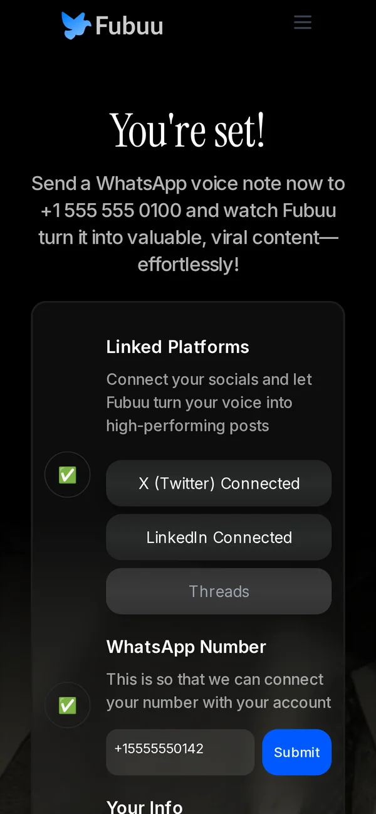

MO
Maya Ortiz @maya_builds · now
Most founders don't have a marketing problem, they have a consistency problem.
→ You don't need a viral thread.
→ Tiny posts, every day, beat one big launch.
Send a WhatsApp voice note. Fubuu transcribes it, rewrites it in your voice and posts it to X and LinkedIn.
Real output from the local demo. Maya is invented.
This is the real backend running on a laptop. WhatsApp, X, LinkedIn and the AI model are local stand-ins, so you can try the whole loop without a single account.

Recorded headless from demo/run.sh. All people and posts are invented.
One WhatsApp message, up to three platforms. Every step is code in the repo.
A voice note or a text to your Fubuu WhatsApp number. Twilio forwards it to the backend.
POST /whatsapp-webhookAudio becomes text with Whisper. Your plan and daily limits are checked in Redis.
FFmpeg · Whisper · RedisYour bio and optional prompt shape a hook-first post for each platform.
OpenAI · your promptFubuu posts with your connected accounts, then replies on WhatsApp with what went out.
X · LinkedIn · ThreadsThe dashboard walks each new user through everything Fubuu needs, and ticks each step off as it is done.

Short and hook-first for X and Threads, a fuller post with a question for LinkedIn. Daily limits per platform keep your feed sane, and three gentle prompts a day, in your time zone, keep the habit going.

There is no new app to open. Users talk to WhatsApp; the web app is only for setup, settings and billing (Stripe checkout and customer portal).

Docker, Node 20+ and uv. Demo mode needs no accounts: every outside service is a local stand-in and no message leaves your machine.
# clone and start everything git clone \ https://github.com/enzihub/fubuu.git cd fubuu bash demo/run.sh # type a thought, press Send http://127.0.0.1:18793/console # the web app, as an invented user http://127.0.0.1:3000/dashboard